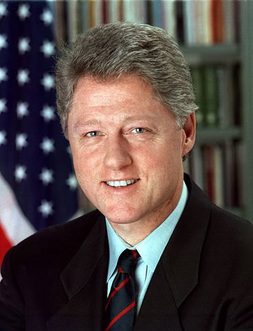

Presided over the longest economic expansion to that point and the first balanced budgets since 1969, signed NAFTA and welfare reform, and was impeached over lying under oath about an affair with a White House intern.
Shaded areas show the years in office, with a few years before and after for comparison. Budget years run October to September, so a new president's first budget year starts the fall after they take office.
Jan 20, 1993: $4.19 trillion → Jan 19, 2001: $5.73 trillion
Debt as a share of GDP. Above 100% means the debt is bigger than a year of everything the country produces.
Money borrowed each budget year (below the line) or paid down (above).
Jan 1993: 7.3% → Jan 2001: 4.2%. Monthly rates; the chart shows yearly averages.
How much prices rose each year (consumer price index).
What everyday prices and paychecks did while in office.
Prices use the consumer price index (MeasuringWorth). The minimum wage is the federal rate set by Congress.
364 orders, numbered 12834–13197.
Source: Federal Register: Clinton executive orders (full list of every order).
Required cost-benefit analysis of major federal regulations, reviewed by the White House. Still the backbone of how regulations are made.
Federal RegisterDirected agencies to address pollution and health burdens that fall hardest on minority and low-income communities.
Federal RegisterBarred large federal contractors from permanently replacing striking workers. Struck down by a federal appeals court in 1996.
Federal RegisterRequired most classified records to be declassified automatically after 25 years.
Federal RegisterAdded sexual orientation to the federal government's equal employment policy.
Federal RegisterRequired agencies and federally funded programs to provide language help.
Federal RegisterSource: Executive Orders Archive, compiled from the American Presidency Project and the Federal Register. Topics are the archive's automated tags; "Revoked" and similar labels come from the Federal Register's records.
A pardon wipes out the punishment for a federal crime; a commutation shortens a sentence but leaves the conviction. Counts are by federal fiscal year. 140 grants came on his last day in office, January 20, 2001.
Source: U.S. Dept. of Justice, clemency statistics, which lists every recipient with the crime and sentence.
The crime: Indicted in 1983 on 65 counts including tax evasion of about $48 million and illegal oil trading with Iran during the hostage crisis
Sentence: Never tried: he had fled to Switzerland
Why it drew attention: His ex-wife Denise Rich had given large sums to the Democratic Party and the Clinton library. Congress held hearings and federal prosecutors investigated; no charges resulted.
SourceThe crime: Conspiracy to distribute cocaine (1985)
Sentence: Served about a year in prison
Why it drew attention: The president's half-brother.
SourceThe crime: Fraud in the Whitewater land deals; contempt for refusing to testify to the independent counsel
Sentence: Two years (fraud); 18 months for contempt
Why it drew attention: A Whitewater figure who refused to testify about the Clintons.
SourceThe crime: Misdemeanor lying to the FBI about payments to a former mistress (pleaded guilty 1999)
Sentence: $10,000 fine
Why it drew attention: Clinton's own former Housing secretary.
SourceThe crime: Cocaine trafficking conspiracy
Sentence: 15 years; about 6 served
Why it drew attention: Hillary Clinton's brother Hugh Rodham was paid about $200,000 to lobby for this and another grant; he returned the money after it came out.
SourceThe crime: Seditious conspiracy and related charges, as members of a Puerto Rican nationalist group behind dozens of bombings
Sentence: Up to 90 years
Why it drew attention: Offered on condition they renounce violence. Both houses of Congress passed resolutions condemning it.
SourceThe crime: Bank robbery (1976), committed after she was kidnapped by a militant group
Sentence: Seven years; commuted by Carter in 1979
Why it drew attention: A long-running campaign argued she had been coerced.
SourceThe crime: Mail fraud (pleaded guilty 1996), from the House post office scandal
Sentence: 17 months
Why it drew attention: Former chair of the House Ways and Means Committee.
SourceThe same checklist for every president. Tap a row for details and sources.
The House impeached Clinton on December 19, 1998 for perjury to a grand jury (228–206) and obstruction of justice (221–212). The Senate acquitted him on February 12, 1999 (45–55 and 50–50; 67 votes needed).
SourceIndependent counsel Robert Ray declined to prosecute in exchange for an admission, reached on January 19, 2001.
A federal judge held Clinton in civil contempt in April 1999 for false testimony in the Paula Jones case, and fined him about $90,000. On his last day he admitted giving false answers under oath and accepted a five-year suspension of his law license and a $25,000 fine.
SourceAssociate Attorney General Webster Hubbell (fraud, 1994) and Housing Secretary Henry Cisneros (misdemeanor, 1999) pleaded guilty. Agriculture Secretary Mike Espy was indicted and acquitted in 1998.
Investigations covered Whitewater, the travel office firings, the FBI files matter, the Lewinsky affair and several cabinet members. None produced charges against the Clintons over Whitewater.
SourceIn the 'Filegate' affair, the White House improperly obtained about 900 FBI background files, including on Republican officials. Independent counsel Ray found no credible evidence that senior officials or the Clintons were involved.
SourceWhat happened, what was proven, and how it ended.
Clinton had a sexual relationship with White House intern Monica Lewinsky, then denied it under oath in the Paula Jones lawsuit and to a grand jury.
Outcome: Impeached and acquitted; held in contempt; law license suspended.
SourceA former Arkansas state employee sued Clinton for sexual harassment from his time as governor. The suit was dismissed in 1998 and settled on appeal.
Outcome: Clinton paid $850,000 without admitting wrongdoing.
SourceInvestigations into the Clintons' Arkansas real estate investment and related bank fraud.
Outcome: Several associates were convicted; the independent counsel found insufficient evidence to charge either Clinton.
SourceForeign donations and White House fundraising, including overnight stays in the Lincoln Bedroom for donors.
Outcome: The DNC returned about $3 million; several fundraisers pleaded guilty to campaign finance crimes.
SourceThe pardon of fugitive financier Marc Rich, whose ex-wife was a major donor, plus grants lobbied for by relatives of Clinton and his wife.
Outcome: Congressional hearings and a federal inquiry; no charges.
SourceSeven employees of the White House travel office were fired and investigated, and business was steered to associates.
Outcome: The independent counsel found Hillary Clinton's testimony 'factually inaccurate' but did not prosecute.
SourceWidely quoted remarks, with the context they were said in.
I did not have sexual relations with that woman, Miss Lewinsky.
It depends upon what the meaning of the word 'is' is.